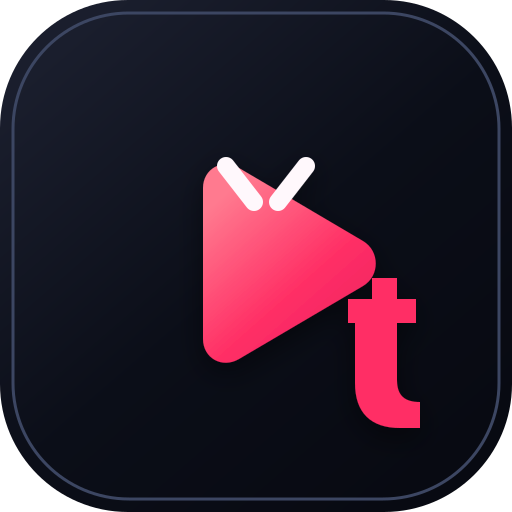

JADAL
ZAMANA
Jadal Zamana (Interval Theme)ZAMANA

PublivoreTube Releases ↗PublivoreTube is a TV-first YouTube client for Android TV and Google TV — big visuals, clear focus states, horizontal shelves, and an interface designed around the remote.
Large targets, obvious focus states, horizontal shelves, and a layout made for a D-pad.
Open videos inside PublivoreTube using the official embedded YouTube player experience.
A dedicated Shorts viewer with remote controls for moving through the feed.
Explore channel artwork, stats, videos, playlists, and available YouTube shelves.
Keep recently watched videos close at hand without needing to sign in.
Optional Google sign-in for subscriptions, ratings, playlists, and more.
The public site uses TV-style sample frames based directly on the current app UI and the screenshots from the Android TV build.
The core TV experience is in place while playback UX, account features, polish, and edge cases continue to improve.
Smoother transitions, stronger focus behavior, and continued visual polish.
More complete subscriptions, ratings, playlists, and account-aware flows.
Better controls around the official player and stronger error handling.
Explore the code, try the current build, report bugs, or contribute.